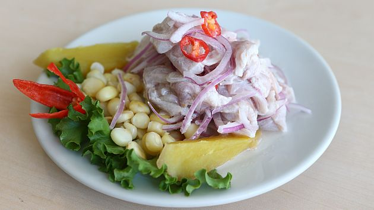
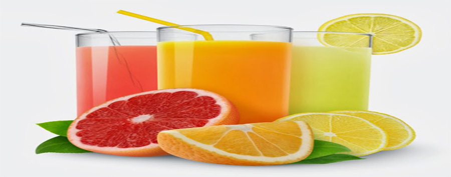

Ceveche
08 de junio del 2017
El ceviche es una comida típica y popular del Perú. La forma de preparar es distinta de un lugar a otro y se conoce por ser una comida que utiliza limón, pescado, camotes y otros alimentos. Es un plato que únicamente utiliza carne de pescado, el cual es cortado en forma de dados pequeños y es decorado por lechuga, rodajas de camote, cancha serrana, yuca y lechuga. El ceviche es muy conocido en el Perú y es un plato preferido de muchas personas.
Escribe un comentario
PublicarMaria 230: que gran sitio web es lo mejor
Jugo de naranja
El jugo de naranja además de ser delicioso y fácil de preparar, está lleno de beneficios para la salud que seguramente no conocemos. Este jugo al ser rico en vitamina C ayuda a reforzar los sistemas de defensa y gracias a esto nos protege de muchas enfermedades, actuando de igual forma que si consumimos la fruta entera. Un estudio realizado por la Universidad East Anglia (Reino Unido), asegura que los cítricos como la naranja contienen sustancias flavonoides, concretamente hesperidina, la cual tiene la capacidad de reducir el riesgo de infarto hasta un 19%. Estas mismas sustancias tienen la capacidad de reducir el colesterol malo (LDL), previene los problemas cardiovasculares y ayuda a regular la presión arterial. Por sus altos contenidos de vitamina C, el jugo de naranja es ideal para combatir y prevenir resfriados, enfermedades respiratorias, ayuda a regular el tránsito intestinal y favorece la eliminación de toxinas del organismo.